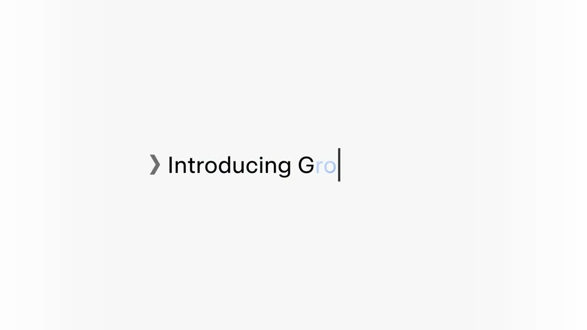
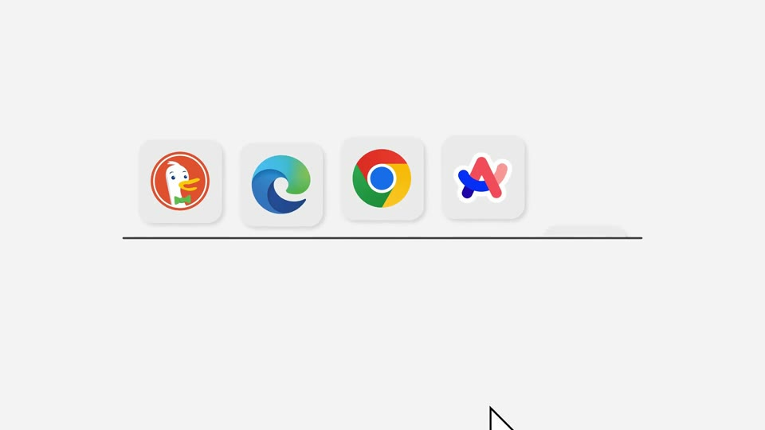
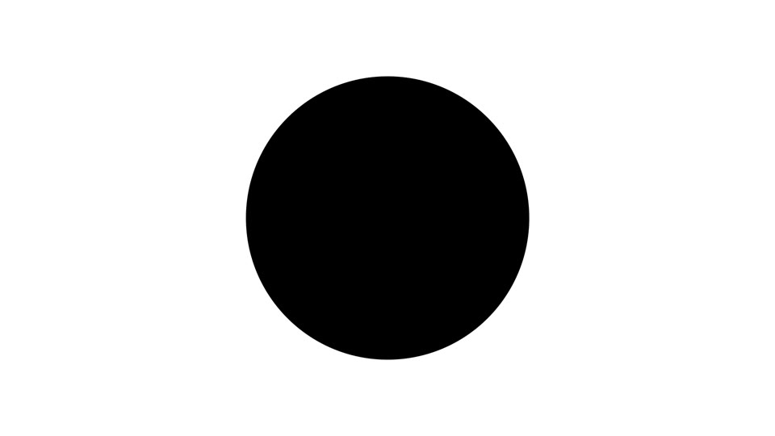
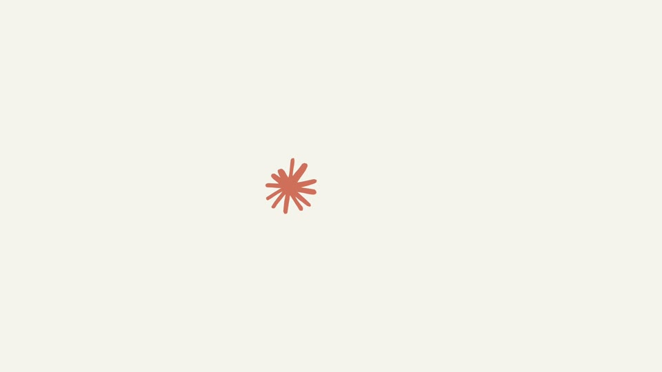

One sentence
The meal types itself, Kallo reads it, the sentence breaks into its ingredients, one detail changes the number, and the camera pulls back to reveal it was the app all along, on iPhone and then on the web.
Colour world. The start aurora at full strength as the world the sentence types into, with its ember and violet glows drifting; the brand sweep saved for the dot that opens on 548.
The film, beat by beat

The meal types itself
“rice with a grilled chicken thigh, skin removed” types at ~20 characters/s, 7% cap height, into the start aurora (apricot wash, ember and violet glows drifting). Fresh letters land tan, then settle to ink.

Kallo reads it
The line greys; each food phrase snaps back to ink as it is recognised; “skin removed” gets a tan highlight.

The sentence becomes its parts
An underline draws; the words sink behind it and three photo tiles rise out: rice 200 g, chicken thigh 125 g, greens 150 g.

The detail changes the number
A tan marker strike lifts the skin off the thigh tile; fat ticks down 22 g → 13 g.

The number lands
The tiles collapse into a tan dot; it irises open and 548 kcal counts up while protein, carbs and fat run to 37, 72 and 13 g.

It was the app all along
Pull back: the result is the meal card in Kallo’s Log on an iPhone slab; the rings fill.

Same meal on the web
The phone outline widens into the web window while “on your iPhone” becomes “on the web”; same day, same totals.

Sign-off
“Log it the way you ate it.” → a tan dot → the Kallo mark → the wordmark types on; held in silence.
How the product enters
There is no moment where the product “appears”. The first frame is already Kallo’s input, set large; the pull-back at 11 s only reveals where it lives.
The most-used grammar in AI launches. The shelf, the ring and the tan make it ours; without them it reads like an OpenAI film.
Decisions for you
What we make
Codex: 3–6 ingredient cut-outs (the rice, both thighs and the greens already exist). Built in Remotion: all type, tiles, the rebuilt Log screen, the web window. Data: the real skin-removed capture; log it on the dev account so the web shows the same day.